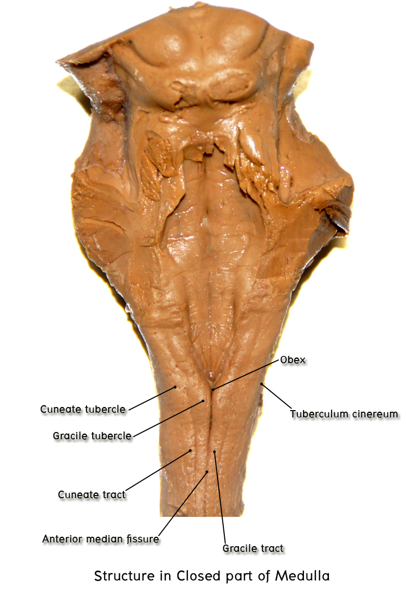

ศึกษา brainstem anatomy
2.1 Medulla oblongata
ศึกษาจาก isolated brainstem และ whole brain ร่วมกับ atlas ให้ชี้แสดงส่วนต่าง ๆ ของ medulla ดังต่อไปนี้
Ventral surface
- Anterior median fissure เป็นร่องที่อยู่ในแนว midline ต่อตรงขึ้นมาจาก anterior median fissure ของ spinal cord
- Pyramids เป็นสันนูนที่ขนาบอยู่ 2 ข้างของ anterior median fissure
- Decussation of pyramids เป็นจุดที่ anterior median fissure ถูก interrupt โดย decussating nerve fiber จาก pyramid ทั้งสองข้างที่ทอดข้าม anterior median fissure ระดับนี้ถือว่าเป็นรอยต่อระหว่าง spinal cord กับ medulla oblongata (spinomedullary junction)
- Preolivary sulcus เป็นร่องที่อยู่ทางด้าน lateral ของ pyramid และคั่นระหว่าง pyramid กับ olive ภายในร่องนี้ให้ชี้แสดง rootlets of hypoglossal nerve (CN XII) ที่โผล่ออกมาเป็นแถว
- Olive เป็นเนินรูปไข่ อยู่ทางด้าน lateral ของ preolivary sulcus
- Post olivary sulcus เป็นร่องที่อยู่ทาง lateral ของ olive ภายในร่องนี้ให้ชี้แสดง rootlets ของ cranial nerve ต่อไปนี้ที่โผล่ออกมาตามลำดับจาก superior ไป inferior ดังนี้: glossopharyngeal nerve (CN IX), vagus nerve (CN X) และ cranial roots of spinal accessory nerve (CN XI)
- Inferior cerebellar peduncle เป็นส่วนของ medulla ที่อยู่ถัดไปจาก post olivary sulcus และอยู่ lateral ที่สุดของส่วนบนของ medulla ลึกลงไปกว่ามันคือ nerve fibers ที่ connect ระหว่าง medulla กับ cerebellum (จะกล่าวถึงต่อไป)
- Trigeminal tubercle (tuberculum cinereum) เป็นเนินที่อยู่ lateral ที่สุดของส่วนล่างของ medulla ลึกลงไปกว่ามันคือ spinal trigeminal tract และ spinal trigeminal nucleu


Dorsal surface (ศึกษาเฉพาะแต่ส่วน closed part ส่วน opened part ให้ไปศึกษาในเรื่อง rhomboid fossa)


- Posterior median sulcus เป็นร่องที่อยู่ในแนว midline โดยต่อตรงขึ้นมาจาก posterior median sulcus ของ spinal cord ร่องนี้จะสิ้นสุดที่ obex ซึ่งเป็น inferior median angle ของ floor ของ fourth ventricle
- Gracile tubercle เป็นเนินนูนที่ขนาบอยู่บริเวณ 2 ข้างของ rostral part ของ posterior median sulcus และเป็น most rostral part ของ gracile fascicle ที่ต่อขึ้นมาจาก spinal cord ลึกลงไปกว่า gracile tubercle เป็นที่อยู่ของ gracile nucleus
- Posterointermediate sulcus เป็นร่องที่อยู่ทาง lateral กว่า gracile tubercle และคั่นระหว่าง gracile tubercle และ gracile fascicle กับ cuneate fascicle ที่อยู่ทาง lateral ออกไป ร่องนี้ต่อตรงขึ้นมาจาก posterointermediate sulcus ของ cervical spinal cord
- Cuneate tubercle เป็นเนินนูนที่อยู่ lateral กว่า posterointermediate sulcus เป็น most rostral part ของ cuneate fascicle ที่ต่อขึ้นมาจาก spinal cord ลึกลงไปกว่า cuneate tubercle เป็นที่อยู่ของ cuneate nuclei
- Posterolateral sulcus เป็นร่องที่อยู่ทาง lateral กว่า cuneate tubercle ร่องนี้ติดต่อโดยตรงกับ posterolateral sulcus ของ spinal cord Lateral กว่า ร่องนี้ทางด้านล่างก็คือ trigeminal tubercle ที่มาบรรจบกับทางด้าน anteriorนั่นเอง